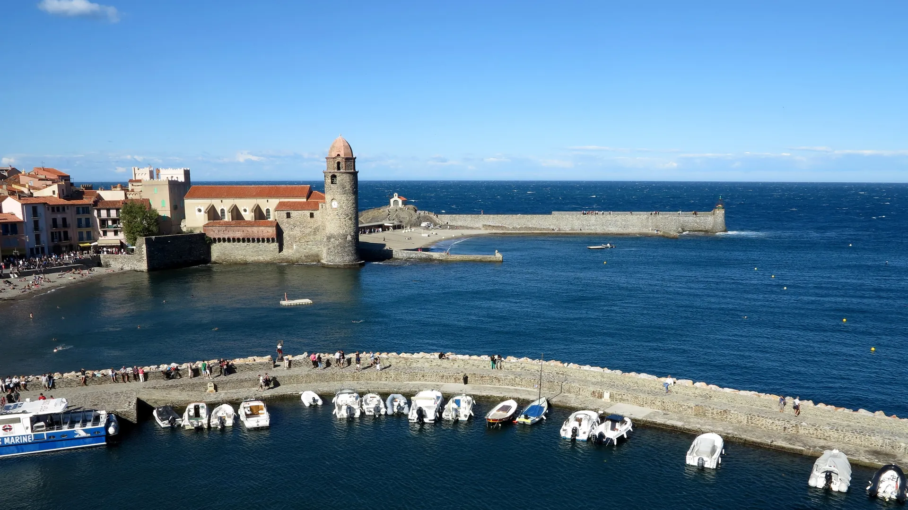

.JPG){kind=link}

Calella de Palafrugell
흰색 회반죽 가옥과 아치 회랑(Les Voltes), 쪽빛 바위 만(Cove)을 잇는 카미 데 론다 해안 산책로가 있는 코스타 브라바의 원형 어촌.

1905년 여름, 앙리 마티스(Henri Matisse)와 앙드레 드랭(André Derain)은 피레네산맥이 지중해와 맞닿는 작은 항구마을 콜리우르에 도착했다. 이곳의 강렬한 햇빛과 붉은 기와지붕, 바다의 짙은 코발트블루에 매료된 두 화가는 형태를 버리고 순수한 원색을 캔버스에 쏟아부었다. 그 결과 미술사에 한 획을 그은 야수파(Fauvisme)가 바로 이 항구에서 탄생했다.
마을 중심에는 바다로 돌출된 13세기 마요르카 왕국의 여름 궁전 샤토 로얄(Château Royal)이 서 있고, 해변 끝에는 옛 등대를 종탑으로 개조한 노트르담 데 장주(Notre-Dame-des-Anges) 성당이 지중해 파도 위에 떠 있는 듯 자리 잡고 있다. 프랑스 영토에 속하지만 역사·문화적으로는 카탈루냐의 깊은 뿌리를 간직한 프랑스령 카탈루냐(Roussillon)의 보석이다.
스페인 국경을 넘어 1시간 만에 닿는 프랑스 카탈루냐의 가장 아름다운 항구다. 야수파 화가들이 이젤을 세웠던 포인트마다 설치된 청동 액자(Chemin du Fauvisme)를 따라 걸으며 미술과 실제 풍경이 일치하는 경이로운 순간을 경험할 수 있다.
| 운영시간 | Château Royal 9/1–10/31 10:00–18:00 (마지막 입장 45분 전) |
|---|---|
| 휴무 | 연중무휴(마을 자체 휴무 없음). 성채는 1/1·5/1·8/15-16·12/25만 휴관 |
| 요금 | Château Royal 성인 €9 |
| 예약 | 마을 방문 자체는 예약 불필요. 여름철 주차난으로 공식 안내가 대중교통 이용을 권고 |
| 메모 | 전통시장 수·일 오전 Place du Maréchal Leclerc |
| 항목 | 상세 정보 |
|---|---|
| 위치 | Collioure, 66190 Pyrénées-Orientales, France |
| 샤토 로얄 운영 | 월–일 10:00–18:00 (계절별 변동) / 입장료 성인 €7.00 Château Royal 성인 €9 |
| 전통 시장 | 수요일·일요일 오전 08:00–13:00 (Place du Maréchal Leclerc) |
| 주차 전략 | 마을 중심 진입 전 외곽 대형 주차장(Parking du Glacis 또는 Parking Cap Dourats) 이용 후 셔틀/도보 이동 권장 |
| 국경 이동 | 스페인 Bàscara에서 AP-7 / A9 고속도로를 타고 프랑스 르 불루(Le Boulou) 방면으로 북상 (약 45~55분 소요) |
| 공식 정보원 | https://www.tourisme-collioure.com (Verified at: 2026-08-17) |
🚗 국경 팁: 렌터카로 스페인에서 프랑스 국경을 넘을 때 쉥겐 조약으로 검문은 없으나, 여권 원본을 반드시 소지해야 합니다.
콜리우르 항구와 언덕 골목 곳곳에는 1905년 마티스와 드랭이 실제로 그림을 그렸던 정확한 지점에 복제화가 담긴 청동 뷰파인더 액자(Cadres) 20여 개가 설치되어 있다.
액자 구멍을 통해 실제 바다와 등대 교회를 바라보면, 화가들이 현실의 색을 어떻게 주관적이고 대담한 원색(빨강, 노랑, 핑크, 터콰이즈)으로 재해석했는지를 몸으로 비교하며 이해할 수 있다.
13세기 말 마요르카 왕국(Kingdom of Majorca)의 국왕들이 여름 별궁으로 개축한 해상 요새다. 로마 시대 요새 터 위에 지어졌으며, 17세기 프랑스 군사 공학의 거장 보방(Vauban)이 외벽과 보루를 확장했다. 성벽 테라스에 오르면 콜리우르 3개 만(Bay)과 항구가 한눈에 내려다보인다.
흰색 회반죽 가옥과 아치 회랑(Les Voltes), 쪽빛 바위 만(Cove)을 잇는 카미 데 론다 해안 산책로가 있는 코스타 브라바의 원형 어촌.

세계 최대 폭(23m)의 기둥 없는 단일 고딕 신랑과 11세기 창조의 태피스트리를 품은 카탈루냐 고딕의 걸작.

기원전 1세기 로마 성벽부터 14세기 카롤링거·중세 성벽을 따라 걸으며 구시가지 붉은 지붕과 피레네산맥을 360도로 조망하는 공중 산책로.

구시가지와 신시가지를 가르는 오냐르 강변의 파스텔톤 채색 가옥들과 구스타브 에펠의 붉은 철교.

엠포르다 평야가 내려다보이는 언덕 위에 완벽하게 복원된 카탈루냐 고딕 석조 요새 마을.

14세기 중세 성채와 카르멜회 수도원, 카탈루냐 카바(Cava) 와이너리 박물관이 있는 역사 마을.